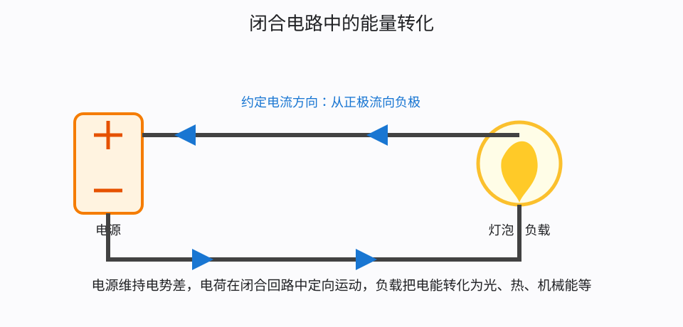

电的原理与应用场景
一、从“电是什么”到“电怎么用”
理解电的本质后，还需要继续回答：
- 电路为什么必须闭合？
- 灯泡为什么会亮？
- 电机为什么会转？
- 发电厂为什么能发电？
- 电为什么能远距离输送？
- 手机、电脑、芯片为什么依赖电？
- Wi-Fi、无线电和光为什么也和电有关？
电的应用非常广，但底层主线并不混乱：
电源维持电势差
↓
电势差推动电荷运动
↓
电荷定向运动形成电流
↓
电流在负载中完成能量转化
↓
电信号还能承载和处理信息
这篇文章按原理和使用场景来理解电。
二、最基本的电路原理
一个最简单的电路通常包括：
- 电源。
- 导线。
- 开关。
- 负载。

2.1 电源的作用
电源不是“制造电子”的设备。
导线和负载中本来就有大量电子。电源真正做的是：
维持两端的电势差，让电荷有持续定向运动的动力。
常见电源：
- 电池：把化学能转化为电能。
- 发电机：把机械能转化为电能。
- 太阳能电池：把光能转化为电能。
- 电源适配器：把一种电压形式转换成另一种电压形式。
2.2 导线的作用
导线提供低电阻通路，让电荷可以比较容易地移动。
常见导线用铜或铝，是因为它们：
- 导电性好。
- 成本相对可控。
- 容易加工。
2.3 负载的作用
负载是消耗电能并完成实际功能的设备。
例如：
| 负载 | 能量转化 |
|---|---|
| 灯泡 | 电能 -> 光能 + 热能 |
| 电炉 | 电能 -> 热能 |
| 电机 | 电能 -> 机械能 |
| 扬声器 | 电能 -> 声能 |
| 充电器 | 电能 -> 化学能 |
| 芯片 | 电能 -> 信号变化 + 热能 |
2.4 开关的作用
开关控制电路是否闭合。
开关闭合 -> 形成通路 -> 可以有持续电流
开关断开 -> 回路中断 -> 持续电流停止
开关不一定是机械按钮。晶体管也可以作为电子开关，这正是数字电路和计算机的基础。
三、欧姆定律：电路中最基础的关系
欧姆定律：
U = I · R
其中：
U是电压。I是电流。R是电阻。
可以用水流类比：
电压 ≈ 水压
电流 ≈ 水流量
电阻 ≈ 管道阻力
水压越大，水越容易流；管道越窄，水越难流。
同理：
- 电压越大，电流倾向于越大。
- 电阻越大，电流倾向于越小。
注意：这个类比只是帮助理解，电路中的电场、电荷运动和能量传输比水流更复杂。
四、电功率：为什么有些电器更“费电”
电功率表示电能转化的快慢：
P = U · I
同样工作 1 小时：
- 1000W 电热水壶消耗的电能多。
- 10W LED 灯消耗的电能少。
电能：
W = P · t
生活中常说的 1 度电：
1 度电 = 1 千瓦时 = 1 kW · h
例如：
1000W 电器运行 1 小时 -> 消耗 1 度电
100W 电器运行 10 小时 -> 消耗 1 度电
五、为什么灯泡会亮
不同灯发光原理不同。
5.1 白炽灯
白炽灯中有细钨丝。
电流通过钨丝时，钨丝电阻较大，会产生大量热：
电流通过钨丝
↓
电阻发热
↓
温度升高到发光
↓
产生光和大量热
白炽灯效率低，因为很多电能变成了热。
5.2 LED 灯
LED 是发光二极管。
它利用半导体材料中电子和空穴复合时释放能量发光。
电流通过半导体 PN 结
↓
电子和空穴复合
↓
释放光子
↓
发光
LED 比白炽灯更省电，因为更多能量直接转化为光，而不是先大量变成热。
六、为什么电机会转
电机利用电流和磁场之间的相互作用。
基本思想：
通电导线在磁场中会受到力
↓
把导线绕成线圈
↓
线圈受力产生转矩
↓
持续改变电流方向或磁场方向
↓
电机连续转动
电机完成的是：
电能 -> 机械能
常见应用：
- 电风扇。
- 洗衣机。
- 电动车。
- 机械臂。
- 硬盘。
- 无人机。
- 工业生产线。
电机说明电不是只能“发光发热”，也可以高效驱动物体运动。
七、为什么发电机能发电
发电机利用电磁感应。

基本逻辑：
外部动力让线圈或磁体运动
↓
穿过线圈的磁场发生变化
↓
线圈中产生感应电动势
↓
闭合回路中形成电流
发电机完成的是：
机械能 -> 电能
发电厂的差异主要在于“让发电机转起来”的方式不同：
| 发电方式 | 能量来源 |
|---|---|
| 火力发电 | 燃料燃烧加热水，蒸汽推动汽轮机 |
| 水力发电 | 水流或水位差推动水轮机 |
| 风力发电 | 风推动风机叶片 |
| 核能发电 | 核裂变产生热，蒸汽推动汽轮机 |
| 光伏发电 | 半导体直接把光能转化为电能 |
除了光伏发电，很多发电方式本质上都是：
某种能量 -> 机械转动 -> 发电机 -> 电能
八、为什么电网常用交流电
家庭和工业电网大多使用交流电。
交流电的重要优势是容易变压。
输电线路损耗主要和电流有关：
线路损耗 ≈ I^2 · R
同样传输功率：
P = U · I
如果提高电压 U，就可以降低电流 I。电流变小后，线路损耗大幅下降。
所以远距离输电通常采用：
发电厂
↓ 升压
高压输电
↓ 降压
城市和工厂
↓ 再降压
家庭用户
交流电可以通过变压器高效升压和降压，这就是它适合大规模电网的重要原因。
九、为什么电池能供电
电池通过化学反应维持正负极之间的电势差。
当外部电路闭合时：
电池内部化学反应
↓
维持正负极电势差
↓
外部电路中形成电流
↓
负载消耗电能
电池不是无限电源。随着化学反应物被消耗，维持电势差的能力下降，电池就会没电。
充电电池则可以通过外部电能推动内部化学反应反向进行，把电能重新转化为化学能储存起来。
十、为什么电子设备能处理信息
电子设备不仅利用电能，还利用电信号表示信息。
数字电路中常用高低电平表示 1 和 0：
高电平 -> 1
低电平 -> 0
10.1 晶体管是电子开关
晶体管可以用一个电信号控制另一个电流是否通过。
它可以像开关一样工作：
控制端电压满足条件 -> 导通 -> 表示一种状态
控制端电压不满足条件 -> 截止 -> 表示另一种状态
大量晶体管组合起来，可以构成：
- 与门。
- 或门。
- 非门。
- 加法器。
- 触发器。
- 存储器。
- CPU。
所以计算机的底层不是抽象符号，而是电路中高低电平的变化。
10.2 芯片为什么会发热
芯片内部有大量晶体管快速开关。
每次状态变化都会消耗能量，电流通过材料也会产生热。
晶体管频繁开关
↓
电容充放电
↓
电能消耗
↓
产生热
这就是 CPU、GPU 需要散热的根本原因。
十一、为什么电能用于通信
通信的本质是传递信息。
电和电磁波非常适合承载信息，因为它们：
- 传播速度快。
- 容易调制。
- 容易放大。
- 容易检测。
- 可以通过导线、光纤、空间传播。
11.1 有线通信
有线通信通过导线或光纤传递信号。
例如网线中传输的是电信号变化，光纤中传输的是光信号，而光本身也是电磁波。
11.2 无线通信
无线通信通过电磁波传播。
基本逻辑：
电路产生变化的电信号
↓
天线把电信号转化为电磁波
↓
电磁波在空间传播
↓
接收天线感应出电信号
↓
电路还原信息
广播、电视、手机通信、Wi-Fi、蓝牙、卫星通信都属于电磁波应用。
十二、家用电的主要场景
12.1 照明
电能转化为光能。
从白炽灯到 LED，本质上是提高能量转化效率。
12.2 加热
电能转化为热能。
例如：
- 电热水壶。
- 电饭锅。
- 电磁炉。
- 电暖器。
电磁炉比较特殊，它利用变化磁场在锅底产生感应电流，使锅体自身发热。
12.3 动力
电能转化为机械能。
例如：
- 洗衣机。
- 空调压缩机。
- 冰箱压缩机。
- 电风扇。
12.4 信息处理
例如：
- 手机。
- 电脑。
- 路由器。
- 电视。
- 智能音箱。
这些设备用电不仅是获得能量，更重要的是用电信号处理和传递信息。
十三、工业中的电
工业场景中，电主要用于：
- 驱动电机。
- 加热和熔炼。
- 自动化控制。
- 传感器检测。
- 通信和监控。
- 电解和电镀。
- 机器人和生产线。
现代工业自动化离不开电，因为电信号可以非常快速地被测量、控制和反馈。
例如自动化产线：
传感器检测位置
↓
控制器读取电信号
↓
程序判断下一步动作
↓
驱动器控制电机
↓
机械结构执行动作
这里电同时承担：
- 能量传输。
- 信息采集。
- 控制指令。
- 动作执行。
十四、医学中的电
人体本身也有电现象。
神经信号和肌肉活动都和离子运动、电位变化有关。
医学中常见电学应用：
| 应用 | 原理 |
|---|---|
| 心电图 ECG | 测量心脏活动产生的电信号 |
| 脑电图 EEG | 测量大脑神经活动相关电信号 |
| 除颤仪 | 用短时强电刺激恢复心律 |
| 电刺激治疗 | 用电信号刺激神经或肌肉 |
| 医学成像设备 | 依赖复杂电磁控制和信号采集 |
这说明电不是只存在于机器中，生命活动本身也有电化学基础。
十五、安全用电的底层逻辑
电危险不是因为“电压”或“电流”单独决定，而是多个因素共同作用：
- 电压大小。
- 通过人体的电流大小。
- 经过人体的路径。
- 接触时间。
- 人体状态和环境湿度。
- 电源能力。
15.1 为什么高压危险
人体有电阻。电压越高，越容易推动较大电流通过人体。
I = U / R
高压还可能击穿空气或皮肤，使原本不容易导电的路径变成导电路径。
15.2 为什么潮湿环境更危险
水分和溶解的离子会降低人体表面电阻，使电流更容易通过人体。
所以浴室、厨房、户外雨天等环境需要更严格的用电保护。
15.3 保险丝、空气开关和漏电保护
保险丝和空气开关主要防过流：
电流过大
↓
线路过热风险上升
↓
保护装置断开电路
漏电保护器关注电流是否从异常路径流走：
火线流出电流
↓
正常应从零线返回
↓
如果返回电流变少，说明可能漏电
↓
快速断电
这能降低触电和火灾风险。
十六、电的应用可以分成三大类
16.1 能量应用
电作为能量载体：
- 发光。
- 发热。
- 驱动电机。
- 电解。
- 充电。
- 工业制造。
16.2 信息应用
电作为信息载体：
- 计算机。
- 手机。
- 网络通信。
- 传感器。
- 控制系统。
- 存储器。
16.3 电磁应用
电和磁共同作用：
- 发电机。
- 电动机。
- 变压器。
- 无线通信。
- 电磁炉。
- 磁悬浮。
- 医学成像。
十七、从电到现代社会
现代社会几乎建立在电之上：
发电厂产生电能
↓
电网传输电能
↓
家庭和工厂使用电能
↓
电子设备处理信息
↓
通信系统连接世界
↓
计算机和互联网构成数字社会
电的意义不只是“点亮灯泡”，而是：
- 让能量可以远距离高效传输。
- 让机器可以自动化运行。
- 让信息可以高速处理和传播。
- 让现代计算、通信、医疗、工业成为可能。
十八、学习电的应用时应该抓住的主线
看到任何电学设备，都可以问四个问题：
- 它的电源是什么？
- 电能在其中转化成了什么？
- 它是否利用电信号处理信息？
- 它是否涉及电磁关系？
例如手机：
- 电源：锂电池。
- 能量转化：电能转化为屏幕光、扬声器声、芯片计算和热。
- 信息处理：芯片用高低电平处理数字信息。
- 电磁关系：天线用电磁波通信。
例如电动车：
- 电源：动力电池。
- 能量转化：电能转化为机械能。
- 信息处理：控制器计算电机驱动策略。
- 电磁关系：电机利用电流和磁场产生转矩。
十九、核心术语速查表
| 中文术语 | 英文术语 | 含义 |
|---|---|---|
| 电源 | Power Source | 维持电势差并提供能量的装置 |
| 负载 | Load | 消耗电能并完成实际功能的设备 |
| 闭合电路 | Closed Circuit | 能让电流持续流动的完整回路 |
| 欧姆定律 | Ohm's Law | 电压、电流、电阻之间的基本关系 |
| 电功率 | Electric Power | 电能转化的快慢 |
| 发电机 | Generator | 把机械能转化为电能的设备 |
| 电动机 | Motor | 把电能转化为机械能的设备 |
| 变压器 | Transformer | 利用电磁感应改变交流电压的设备 |
| 晶体管 | Transistor | 可以控制电流的半导体器件 |
| 电信号 | Electrical Signal | 用电压或电流变化承载信息 |
| 电磁波 | Electromagnetic Wave | 变化电场和磁场相互激发并传播的波 |
| 交流电 | Alternating Current, AC | 大小和方向周期性变化的电流 |
| 直流电 | Direct Current, DC | 方向基本不变的电流 |
| 漏电保护器 | Residual Current Device, RCD | 检测异常漏电并断电的保护装置 |
二十、总结
电的使用场景虽然复杂，但可以归纳为三件事：
传递能量
处理信息
利用电磁相互作用
灯泡、电炉、电机主要体现能量转化；手机、电脑、网络主要体现信息处理；发电机、电动机、变压器、无线通信主要体现电磁关系。
从底层看，所有这些应用都离不开同一条主线：
电源维持电势差，电势差推动电荷运动，电流在具体设备中发生能量转化或信号变化，而电流和变化的电磁场又进一步支撑发电、动力、通信和现代电子技术。